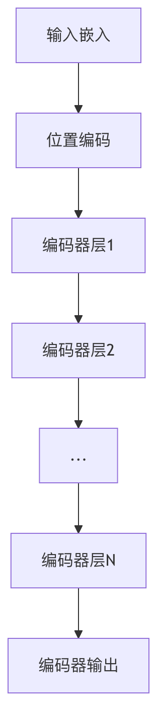

Transformer アーキテクチャ
Transformer アーキテクチャは、自己注意機構（Self-Attention）に基づく深層学習モデルであり、Google チームが 2017 年の論文《Attention Is All You Need》で初めて提案されました。
Transformer は自然言語処理（NLP）の分野を根本から変え、現代の大規模言語モデル（GPT、BERT など）の中核的な基盤となっています。
Transformer は再帰型ニューラルネットワーク（RNN）と同様に、自然言語などの順序入力データを処理することを目的としており、機械翻訳やテキスト要約などのタスクに適しています。しかし、RNN とは異なり、Transformer は系列を逐次処理する必要がなく、入力全体を一度に並列処理できます。
この章では、Transformer の核となる考え方、アーキテクチャの構成要素、そして動作原理を詳しく解説し、この革命的な技術の基礎知識を習得するのに役立ちます。
Transformer アーキテクチャ図
左側がエンコーダー、右側がデコーダーです。

1. 入力処理（下部）
- Embeddings/Projections（埋め込み/射影層）
- 役割：入力の単語（またはトークン）を数値ベクトルに変換します（例：「猫」→ [0.2, -0.5, 0.7…]）。
- たとえ：まるで各単語に固有の「ID番号」を割り当てるようなものですが、より賢く、意味情報も含んでいます。
2. エンコーダー（左側）
-
Multi-Headed Self-Attention（マルチヘッド自己注意）
- 役割：モデルが入力内のすべての単語を同時に注目し、それらの間の関係を計算できるようにします。
- 例：「猫はネズミを追う」という文では、モデルは「猫」と「ネズミ」の関連が「猫」と「追う」よりも強いことを学習します。
- ポイント：すべての単語を並列処理し、RNNのように逐次計算する必要はありません。
-
Norm（層正規化）
- 役割：学習プロセスを安定させ、数値が大きくなりすぎたり小さくなりすぎたりするのを防ぎます（「音量を適切な範囲に調整する」ようなもの）。
-
Feed-Forward Network（フィードフォワードニューラルネットワーク）
- 役割：各単語の表現をさらに加工します（より複雑な特徴を抽出するなど）。
- たとえ：「猫」のベクトルを深く解釈し、詳細を補足するようなものです（例：「猫は哺乳類である」）。
3. デコーダー（右側）
-
Masked Multi-Headed Self-Attention（マスク付きマルチヘッド自己注意）
- 役割：学習時にモデルが「カンニング」するのを防ぎます（現在と過去の単語だけを見て、未来を見ることができません）。
- 例：「我爱__」を生成する場合、モデルは「我」「爱」だけに基づいて次の単語を予測し、答えが「你」であることを事前に知ることはできません。
-
Multi-Headed Cross-Attention（マルチヘッド交差注意）
- 役割：デコーダーがエンコーダーに「入力について、何を重点的に注目すべきか？」と尋ねるようにします。
- シナリオ：翻訳タスクでは、デコーダーが英語を生成する際に、エンコーダーが処理した中国語の入力を参照します。
-
Norm と Feed-Forward Network
- エンコーダーと同様に、デコーダーの表現を正規化し、深く処理します。
4. 出力（上部）
- Linear（線形層）
- 役割：デコーダーの出力を語彙表にマッピングします（例：次の単語が「你」である確率が最も高くなるように予測します）。
- 例：「我爱」を入力すると、モデルが「你」を出力する確率は80％、「吃饭」を出力する確率は10％になるかもしれません…
Transformer の核となる考え方
自己注意機構（Self-Attention）
Transformer の核となる考え方は、注意機構に完全に依存し（再帰や畳み込み構造は不要）、入力系列内の大域的な依存関係を捉えることで、効率的な並列計算とより強力な長距離依存関係のモデリングを実現することです。
実例
def self_attention(query, key, value):
scores = torch.matmul(query, key.transpose(-2, -1)) # 類似度を計算
weights = torch.softmax(scores, dim=-1) # 確率分布に変換
output = torch.matmul(weights, value) # 重み付き和を計算
return output
式：
\[ \text{Attention}(Q, K, V) = \text{softmax}\left(\frac{QK^T}{\sqrt{d_k}}\right)V \]
- \(Q\)（Query）、\(K\)（Key）、\(V\)（Value）は入力から線形変換によって得られる行列です。
- \(\sqrt{d_k}\) はスケーリング係数で、内積が大きくなりすぎて勾配が消えるのを防ぎます。
マルチヘッド注意（Multi-Head Attention）
- 自己注意機構を並列で複数回（複数の「ヘッド」）実行し、各ヘッドが異なる注意パターンを学習し、最後に結果を連結します。
- 利点：より豊かな文脈情報を捉えることができます（例：局所的/大域的な依存関係、構文/意味的特徴）。
位置エンコーディング（Positional Encoding）
- Transformer 自体には再帰や畳み込み構造がないため、系列の順序を直接認識できず、位置情報を明示的に注入する必要があります。
- 正弦/余弦関数または学習可能な位置エンコーディングを使用します：
フィードフォワードニューラルネットワーク（Feed-Forward Network, FFN）
- 各位置の表現は、2層の全結合ネットワーク（ReLU などの非線形活性化を含む）によってさらに変換されます。
- 式：\( \text{FFN}(x) = \max(0, xW_1 + b_1)W_2 + b_2 \)。
残差接続と層正規化（Residual Connection & Layer Norm）
- 残差接続：入力を出力に直接加算し（例：\( x + \text{Sublayer}(x) \)）、勾配消失を緩和します。
- 層正規化：各層の出力を正規化し、学習を高速化します。
並列処理能力
従来の RNN/LSTM とは異なり、Transformer は系列全体を並列処理できるため、学習効率が大幅に向上します。
大域的な依存関係のモデリング
単語間の距離がどれだけ離れていても、Transformer は直接依存関係を構築できるため、長距離依存の問題を解決します。
エンコーダー-デコーダー構造
Transformer は古典的なエンコーダー-デコーダーアーキテクチャを採用していますが、各部分は同じモジュールを多層に積み重ねた構成になっています。
エンコーダー（Encoder）
| 構成要素 | 機能説明 | 重要性 |
|---|---|---|
| マルチヘッド注意 | 異なる部分空間の意味情報を捉える | ★★★★★ |
| フィードフォワードネットワーク | 非線形変換と特徴抽出 | ★★★★ |
| 残差接続 | 勾配消失問題を緩和する | ★★★★ |
| 層正規化 | 学習プロセスを安定させる | ★★★★ |

デコーダー（Decoder）
デコーダーはエンコーダーに加えて、以下を追加しています：
- マスク付きマルチヘッド注意：現在位置が未来の情報に注意を向けるのを防ぐ
- エンコーダー-デコーダー注意：ソース言語の情報を融合する
位置エンコーディング（Positional Encoding）
Transformer には再帰構造がないため、位置情報を明示的に注入する必要があります。
正弦位置エンコーディングの式
式は2つの部分に分かれており、位置エンコーディングベクトルの偶数次元と奇数次元にそれぞれ対応します：偶数次元（2i），奇数次元（2i+1）。
パラメータの説明：
pos：系列内での単語の位置（例：1番目の単語、2番目の単語など）。i：位置エンコーディングベクトルの次元インデックス（0 ≤ i < d_model/2）。d_model：位置エンコーディングの次元（通常は単語ベクトルの次元と同じで、512、768 など）。
位置エンコーディングの特徴
- 相対位置に敏感：相対位置関係を学習できる
- 長さの拡張が可能：学習時よりも長いシーケンスを処理できる
- 決定性：学習不要で、直接計算で求められる
実例
class PositionalEncoding(nn.Module):
def __init__(self, d_model, max_len=5000):
super().__init__()
position = torch.arange(max_len).unsqueeze(1)
div_term = torch.exp(torch.arange(0, d_model, 2) * (-math.log(10000.0) / d_model))
pe = torch.zeros(max_len, d_model)
pe[:, 0::2] = torch.sin(position * div_term)
pe[:, 1::2] = torch.cos(position * div_term)
self.register_buffer('pe', pe)
Transformer の利点
従来のアーキテクチャとの比較
| 特性 | Transformer | RNN/LSTM | CNN |
|---|---|---|---|
| 並列性 | 完全並列 | シーケンス処理 | 局所並列 |
| 長距離依存 | 直接モデル化 | 段階的伝達 | 限られた受容野 |
| トレーニング速度 | 快 | 慢 | 中程度 |
| メモリ消費 | 比較的高い | 中程度 | 低 |
実用的な応用における利点
- 優れた性能：ほとんどのNLPタスクでstate-of-the-artを達成
- スケーラビリティ：モデル規模を簡単に拡大できる（例：GPT-3）
- マルチモーダル対応：テキスト、画像、音声など多様なデータに適用可能
- 転移学習に適している：事前学習+ファインチューニングのパラダイムが顕著な効果を発揮
実践演習
演習1：基本的な自己注意を実装する
実例
import torch.nn.functional as F
def scaled_dot_product_attention(Q, K, V, mask=None):
d_k = Q.size(-1)
scores = torch.matmul(Q, K.transpose(-2, -1)) / math.sqrt(d_k)
if mask is not None:
scores = scores.masked_fill(mask == 0, -1e9)
weights = F.softmax(scores, dim=-1)
return torch.matmul(weights, V)
演習2：位置エンコーディングを理解する
- 異なる位置の位置エンコーディングベクトルを可視化する
- 位置エンコーディング間の類似度を計算し、位置関係を観察する
よくある質問
Q: TransformerはなぜRNNよりも長いテキストに適しているのですか？RNNは情報を段階のに伝達するため、長距離依存が失われやすいですが、Transformerは任意の2つの単語間の関係を直接構築できます。
Q: 位置エンコーディングに正弦関数を選ぶのはなぜですか？A: 正弦関数は周期性を持ち、相対位置関係を表現できるためです。また、学習時に見たことのないシーケンス長にも拡張できます。
Q: Transformerの主な計算ボトルネックはどこですか？A: 自己注意メカニズムの空間複雑度はO(n²)であり、長いシーケンスを処理する際に大量のメモリを消費します。
まとめ
Transformerアーキテクチャは自己注意メカニズムによってシーケンスモデリングの方法を根本的に変えました。その中核的な利点は次のとおりです。
- 強力な並列計算能力
- 効率的な長距離依存のモデル化
- 柔軟なスケーラビリティ
- 優れた性能
Transformerの基本原理を習得することは、現代のNLP技術を学ぶための重要な基盤であり、BERTやGPTなどの最先端モデルを理解する鍵でもあります。
その他の拡張